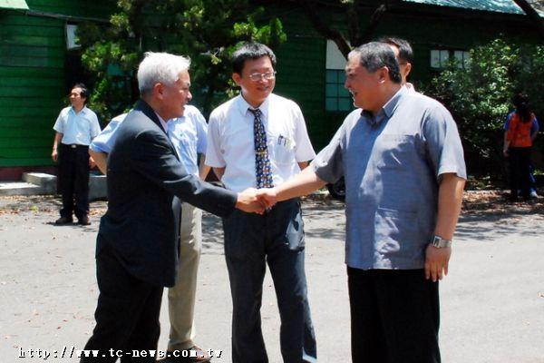

暗藏山中的戰略洞庫
在 1930 年代，日本帝國為了強化太平洋戰爭後方儲備，秘密在台北文山、台中太平、台南仁德、高雄旗津等地開鑿地下彈藥庫。 這些洞庫坐落於偏遠丘陵或臨海緣地，結構以厚實的鋼筋混凝土築成，洞口常與鐵道暢通，內部搭配通風與排濕系統，確保山砲彈與炸藥不受潮。 隧道設計兼顧防爆和抗震，多用多層空間和緩坡存放，以便彈藥分類管理，也為快速裝載提供便利機能。 這些彈藥庫不只是軍備儲備中心，也是日本在台戰略佈署的一環，於平時靜默無聲，但一旦戰事升溫，即能迅速支援前線兵力，是帝國後勤體系的重要一環。
在 1930 年代，日本帝國為了強化太平洋戰爭後方儲備，秘密在台北文山、台中太平、台南仁德、高雄旗津等地開鑿地下彈藥庫。 這些洞庫坐落於偏遠丘陵或臨海緣地，結構以厚實的鋼筋混凝土築成，洞口常與鐵道暢通，內部搭配通風與排濕系統，確保山砲彈與炸藥不受潮。 隧道設計兼顧防爆和抗震，多用多層空間和緩坡存放，以便彈藥分類管理，也為快速裝載提供便利機能。 這些彈藥庫不只是軍備儲備中心，也是日本在台戰略佈署的一環，於平時靜默無聲，但一旦戰事升溫，即能迅速支援前線兵力，是帝國後勤體系的重要一環。
日本時代

第二次世界大戰
硝煙中的軍需翻動
隨著二次大戰全面爆發，這些地下庫房迅速轉換為彈藥要衝。 太平、文山等地不僅堆滿山砲彈、炸藥箱，甚至與特攻部隊基地相距甚近，隨時可動員裝備投入戰局。 隧道內部厚牆不僅隔絕爆炸震波，也提供防護及庫房穩定性，儲存區域規劃精巧，所有動線安排皆考慮快速搬運與裝車效率。 當時庫房 keeper 必須受過緊繃紀律訓練，夜間燈光僅能使用紅燈，以免被敵機偵測。 炮彈入庫、分類、裝運，宛如精密機械運轉，代表著緊繃戰時後方的動力心跳。
隨著二次大戰全面爆發，這些地下庫房迅速轉換為彈藥要衝。 太平、文山等地不僅堆滿山砲彈、炸藥箱，甚至與特攻部隊基地相距甚近，隨時可動員裝備投入戰局。 隧道內部厚牆不僅隔絕爆炸震波，也提供防護及庫房穩定性，儲存區域規劃精巧，所有動線安排皆考慮快速搬運與裝車效率。 當時庫房 keeper 必須受過緊繃紀律訓練，夜間燈光僅能使用紅燈，以免被敵機偵測。 炮彈入庫、分類、裝運，宛如精密機械運轉，代表著緊繃戰時後方的動力心跳。
國軍接收與後勤轉用
1945 年光復後，國軍迅速接收這些戰略設施，並將其功能轉為我軍後勤支援。 文山富陽洞庫被聯勤使用儲存高砲彈直至 1988 年；旗津與太平彈藥庫則改作一般軍需倉儲。 1950 年代，國軍加強中部戰略佈署，於台中太平設置多處現代化彈藥掩體，以配合兵工需求與防空準備。 這些掩體採用鋼筋混凝土構築，設有防爆門與天然屏障，並連接內部道路與出庫門，便於緊急調度。 不少灌木與植被也被種植以隱匿於山林中，防止空中偵察並維護民間安全。 整體佈局顯示國軍依據既有日本結構進行接續整備，強化防禦與後勤效率，但也暗示這些設施將維持其軍事色彩。
1945 年光復後，國軍迅速接收這些戰略設施，並將其功能轉為我軍後勤支援。 文山富陽洞庫被聯勤使用儲存高砲彈直至 1988 年；旗津與太平彈藥庫則改作一般軍需倉儲。 1950 年代，國軍加強中部戰略佈署，於台中太平設置多處現代化彈藥掩體，以配合兵工需求與防空準備。 這些掩體採用鋼筋混凝土構築，設有防爆門與天然屏障，並連接內部道路與出庫門，便於緊急調度。 不少灌木與植被也被種植以隱匿於山林中，防止空中偵察並維護民間安全。 整體佈局顯示國軍依據既有日本結構進行接續整備，強化防禦與後勤效率，但也暗示這些設施將維持其軍事色彩。
光復後
國軍醫療據點
坪林營區變身醫療後勤基地
台中太平的坪林營區原為日治時期「東飛行場」跑道與停機坪，後由國軍接收重築為野戰營。 此地肩負新兵訓練、駕訓轄管以及後方醫療體系重任。國軍 803 醫院設於營內，主要負責砲彈維修與存放設施管控，並隨時準備處理戰傷後送任務，成為聯勤醫療最前線的一環。 營區裡，砲彈與儲藥設施與醫療區相近，兩者協同運作——彈藥隧道迅速補給前線，醫療單位則待命救治傷患。 這種軍事後勤與醫療整合的模式，彰顯戰時國軍對於後方支援能力的重視，也反映國家面對戰爭威脅時的全面佈署思維。
台中太平的坪林營區原為日治時期「東飛行場」跑道與停機坪，後由國軍接收重築為野戰營。 此地肩負新兵訓練、駕訓轄管以及後方醫療體系重任。國軍 803 醫院設於營內，主要負責砲彈維修與存放設施管控，並隨時準備處理戰傷後送任務，成為聯勤醫療最前線的一環。 營區裡，砲彈與儲藥設施與醫療區相近，兩者協同運作——彈藥隧道迅速補給前線，醫療單位則待命救治傷患。 這種軍事後勤與醫療整合的模式，彰顯戰時國軍對於後方支援能力的重視，也反映國家面對戰爭威脅時的全面佈署思維。
廢營後再生都市空間
1988 年國軍全面退出坪林基地後，廢棄營區逐漸成為荒廢空間。 然而始於 1998 年至 2007 年間，這些舊軍事掩體陸續拆除與綠化，公共部門與在地團體合作將地塊轉型為生態農園與教育基地， 不僅保留部分混凝土構築與歷史標示，也新種植果樹與生態植物，以體現軍事遺跡與自然環境的融合。 這段轉型既彰顯社區參與精神，也使這片地重新成為教育與休憩場所，市民能透過導覽活動感受歷史印記並見證和平轉換。 這種從廢棄軍事空間到兼具歷史紀錄與生態再生的都市空間演變，體現台中社會與政府對文化与環境兼顧的價值觀。
1988 年國軍全面退出坪林基地後，廢棄營區逐漸成為荒廢空間。 然而始於 1998 年至 2007 年間，這些舊軍事掩體陸續拆除與綠化，公共部門與在地團體合作將地塊轉型為生態農園與教育基地， 不僅保留部分混凝土構築與歷史標示，也新種植果樹與生態植物，以體現軍事遺跡與自然環境的融合。 這段轉型既彰顯社區參與精神，也使這片地重新成為教育與休憩場所，市民能透過導覽活動感受歷史印記並見證和平轉換。 這種從廢棄軍事空間到兼具歷史紀錄與生態再生的都市空間演變，體現台中社會與政府對文化与環境兼顧的價值觀。
轉型期

坪林森林公園
綠意中的軍事記憶
2009 至 2012 年間，經過協調與規劃，坪林營區拆除工程展開， 大約 20 多公頃土地回饋勤益科技大學，其餘約 11.4 公頃劃歸太平區政府改建為坪林森林公園。 該公園於 2015 年 4 月 21 日啟用，以保留 695 棵原生老樹、建置 3.2 萬立方公尺滯洪池及多樣步道設施為特色。 環場道、自行車道、親水木棧道與 1,200 席戶外廣場，使當地居民享受森林與水域交織的休憩體驗。 這座由軍營蛻變的都市綠肺，不僅具有環境教育功能，也提升城市防洪韌性，是軍事記憶與自然整合的成功案例，獲居民與媒體好評。
2009 至 2012 年間，經過協調與規劃，坪林營區拆除工程展開， 大約 20 多公頃土地回饋勤益科技大學，其餘約 11.4 公頃劃歸太平區政府改建為坪林森林公園。 該公園於 2015 年 4 月 21 日啟用，以保留 695 棵原生老樹、建置 3.2 萬立方公尺滯洪池及多樣步道設施為特色。 環場道、自行車道、親水木棧道與 1,200 席戶外廣場，使當地居民享受森林與水域交織的休憩體驗。 這座由軍營蛻變的都市綠肺，不僅具有環境教育功能，也提升城市防洪韌性，是軍事記憶與自然整合的成功案例，獲居民與媒體好評。
空總基地轉型引領新潮
坐落於台北仁愛路的空軍司令部舊址，原為 1939 年建立的台灣總督府工業研究所， 1949 年轉型為空軍司令部，2012 年搬遷。此後於 2015 年由行政院宣布全面保留，並改為「空總創新基地」， 設立臺灣當代文化實驗場與社會創新實驗中心。該基地保留戰情大樓、碉堡與防空洞等軍事構造，成為文化、科技與社會創業的交匯點， 並於 2014 至 2015 年間被指定為直轄市定古蹟及文化資產 。2017 年，部分園區交由文化部和經濟部管理，鼓勵民眾參與藝文與創新活動。 現場不僅見證軍事歷史，更成為年輕創業者與社區共創平台，並成為促進文化傳承與科技創新的重要火花。
坐落於台北仁愛路的空軍司令部舊址，原為 1939 年建立的台灣總督府工業研究所， 1949 年轉型為空軍司令部，2012 年搬遷。此後於 2015 年由行政院宣布全面保留，並改為「空總創新基地」， 設立臺灣當代文化實驗場與社會創新實驗中心。該基地保留戰情大樓、碉堡與防空洞等軍事構造，成為文化、科技與社會創業的交匯點， 並於 2014 至 2015 年間被指定為直轄市定古蹟及文化資產 。2017 年，部分園區交由文化部和經濟部管理，鼓勵民眾參與藝文與創新活動。 現場不僅見證軍事歷史，更成為年輕創業者與社區共創平台，並成為促進文化傳承與科技創新的重要火花。
創新中心
未來展望
綠能、防災與文化串連
展望未來，這些軍事基地轉型場域具備多重潛能。 坪林森林公園可加入歷史解說與滯洪展示，凸顯其軍事歷史與防災功能； 富陽與土城區域則可規劃「軍事記憶週末導覽」活動，邀請耆老與志工共同述說典故。 空總創新基地可再深化軍民融合，整合無人機、AI與國防科技，成為軍事科技轉民用的示範場域，並持續擴展其文化與社會創新功能。 此外，串聯旗津、仁德、土城、富陽與空總等歷史節點，建立「台灣彈藥庫遺址網絡」，不僅保存歷史，也透過導覽與文化教育展現其價值。 透過跨場域合作，這些曾是硝煙匯聚之地的基地，將持續在和平時代展現文化韌性、社區共榮及未來創新精神。
展望未來，這些軍事基地轉型場域具備多重潛能。 坪林森林公園可加入歷史解說與滯洪展示，凸顯其軍事歷史與防災功能； 富陽與土城區域則可規劃「軍事記憶週末導覽」活動，邀請耆老與志工共同述說典故。 空總創新基地可再深化軍民融合，整合無人機、AI與國防科技，成為軍事科技轉民用的示範場域，並持續擴展其文化與社會創新功能。 此外，串聯旗津、仁德、土城、富陽與空總等歷史節點，建立「台灣彈藥庫遺址網絡」，不僅保存歷史，也透過導覽與文化教育展現其價值。 透過跨場域合作，這些曾是硝煙匯聚之地的基地，將持續在和平時代展現文化韌性、社區共榮及未來創新精神。